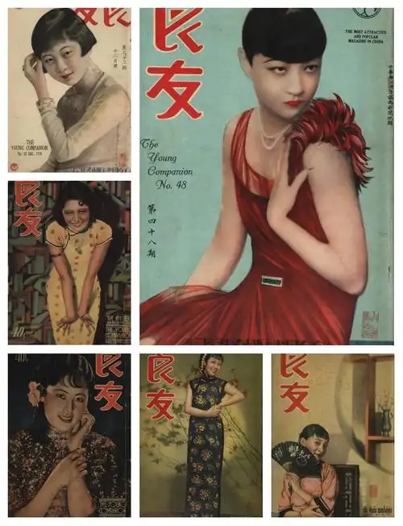
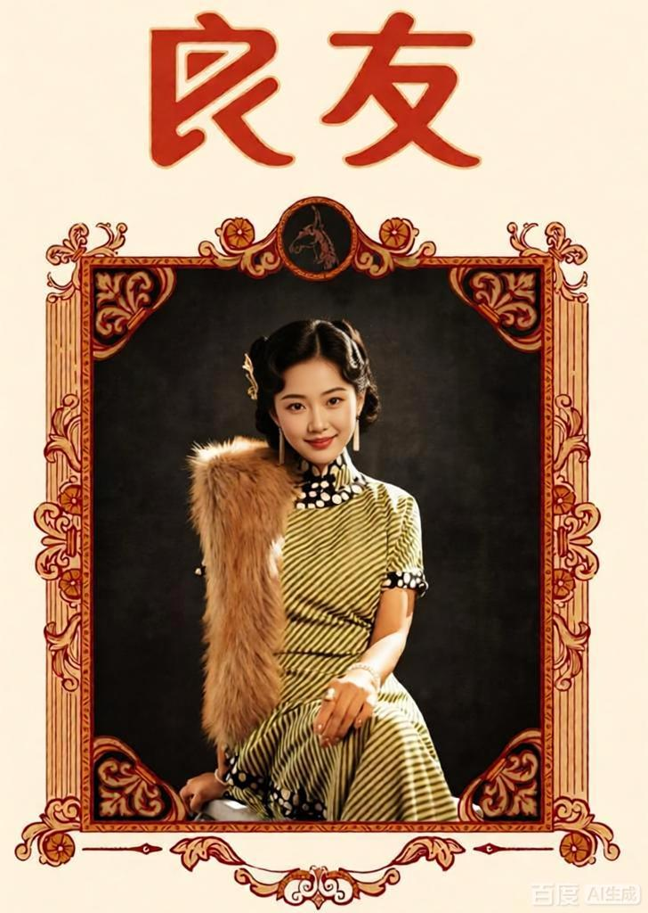
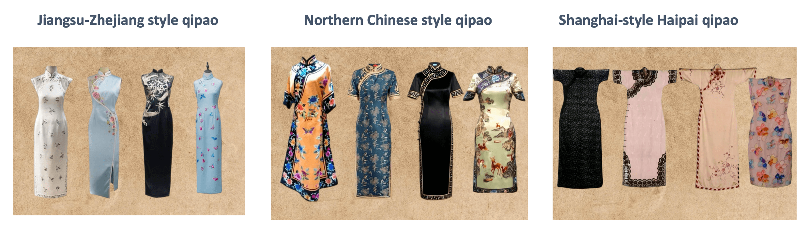
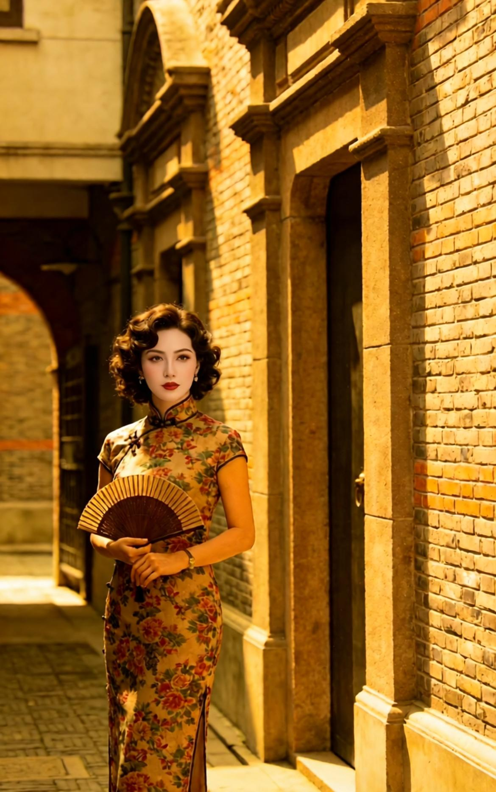
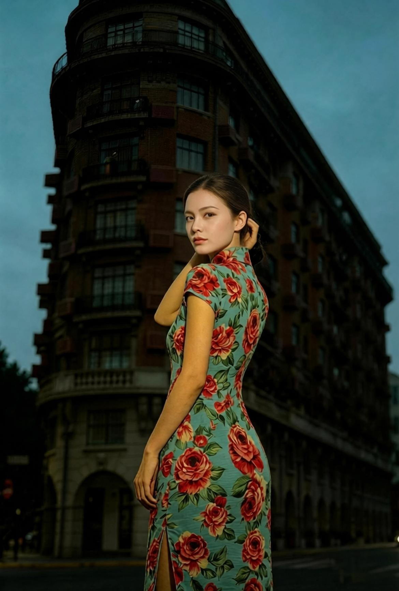

Quick Guide
Introduction
When international travelers picture classic Shanghai beauty, one iconic image always comes to mind: women walking gracefully along old Bund streets or Shikumen lanes in a delicate qipao (cheongsam). For over a century, the qipao has been deeply intertwined with Shanghai's urban temperament, becoming not only a representative traditional Chinese costume but also a core cultural symbol of Shanghai women's unique charm.

Many visitors traveling to Shanghai choose a qipao photoshoot as a must-have travel experience, precisely because this dress perfectly captures the city's one-of-a-kind blend of vintage romance and modern sophistication.
The Origin: How Shanghai Created Modern Qipao
Though the qipao originated from traditional Manchu robes in the Qing Dynasty, the modern tailored qipao recognized worldwide was born and popularized in old Shanghai during the 1920s-1940s. At that time, Shanghai was known as the "Paris of the East," the most open and cosmopolitan city in China, where Eastern traditional aesthetics collided freely with Western tailoring techniques.
Unlike loose, ancient traditional robes, Shanghai designers innovated boldly: they adopted Western three-dimensional cutting, added waist cinching, streamlined the silhouette, and retained classic Chinese elements such as frog buttons, embroidered patterns, and silk textures. This upgraded, slim-fitting modern qipao perfectly highlighted women's gentle and elegant body lines, quickly sweeping through Shanghai's upper class, film industry, and urban workplace.
Legendary old Shanghai female stars including Ruan Lingyu and Hu Die frequently appeared in magazines, movies, and social events wearing customized qipaos. Popular Republic of China-era publications like Liangyou Magazine and calendar posters further spread the trend, fixing the classic impression of "Shanghai women + qipao" in public aesthetics for generations.
Today, this vintage aesthetic experience has been beautifully revived. Some Shanghai studios and themed restaurants recreate the classic Liangyou Magazine style, offering visitors professional qipao photography services—complete with vintage styling, Republican-era props, and old Shanghai backdrops—allowing you to capture your own timeless "Shanghai beauty" moments. If you're interested in this service, contact us for personalized recommendations and booking assistance.


Why Qipao Is Closely Linked to Shanghai Women's Temperament
The deep bond between qipao and Shanghai women is never just superficial clothing matching—it is a perfect fit of costume temperament and urban character.
Shanghai's unique Haipai (Shanghai-style) culture features openness, inclusiveness, refinement, and subtle luxury. Local Shanghai women have long been known for their elegant manners, delicate taste, and independent and gentle temperament. The modern Shanghai-style qipao fully embodies these traits: it preserves the reserved elegance of Eastern tradition while embracing the fashionable, inclusive vibe of an international metropolis.
Strolling through Shanghai's classic scenic spots—whether the neon-lit Bund at night, the nostalgic stone Shikumen old alleys, the peaceful Yu Garden ancient streets, or the vintage Wukang Road villas—a qipao outfit never feels out of place. It blends seamlessly with the city's old-world glamour and modern prosperity, interpreting the unique charm of Shanghai women: gentle but not weak, classy but not ostentatious, traditional yet fashionable.
Not All Qipaos Are the Same: Regional Style Differences Worth Exploring
A key travel insight for foreign visitors is that qipao styles vary greatly across China, and only Shanghai-style qipao carries exclusive metropolitan nostalgia.
-
•
Jiangsu-Zhejiang style qipao: Mostly made of plain linen and cotton, with loose tailoring and simple designs, highlighting the quiet, pastoral gentleness of Jiangnan water towns.
-
•
Northern Chinese style qipao: Features solemn colors and loose silhouettes, emphasizing grandeur and generosity, often worn for official ceremonies and festivals.
-
•
Shanghai-style Haipai qipao: Prefers glossy silk, delicate embroidery, retro prints, and slim customized cutting. Matched with high heels, curly hairstyles, and subtle classical accessories, it presents the unique vintage urban elegance of old Shanghai that cannot be found elsewhere.
This is why travelers specifically travel to Shanghai for qipao experience tours: it is the only city where you can feel the century-old fashion evolution and authentic Haipai cultural heritage behind the costume.

Best Shanghai Spots for Classic Qipao Travel & Photoshoots
For travelers who want to experience the timeless charm of Shanghai qipao culture, these iconic locations offer the most authentic vintage atmosphere:
1. The Bund
The colonial-style old buildings and riverview night scenery perfectly match retro silk qipaos, recreating the glamorous style of old Shanghai in the Republic of China era.

2. Shikumen Old Alleys (Tianzifang, Xintiandi)
The grey brick walls, stone doors, and old alley textures are the most classic backdrop for fresh and elegant qipao styles, full of humanistic nostalgia.

3. Wukang Road & Fuxing Park
Vintage garden villas, lush plane trees, and quiet streets create a soft and romantic atmosphere, ideal for casual and elegant qipao travel shots.

4. Shanghai Museum
The permanent Haipai qipao exhibition displays hundreds of vintage qipao treasures from different eras, allowing travelers to systematically understand the century-old evolution of Shanghai qipao culture and appreciate the exquisite craftsmanship of traditional Chinese costumes.

Final Travel Insight: Qipao Is Shanghai's Living Cultural Heritage
Today, qipao is no longer just a vintage costume. It is a living cultural symbol of Shanghai, recording the city's integration of Chinese and Western cultures, witnessing the changes of urban fashion, and embodying the elegant temperament of modern Chinese women.
When you travel to Shanghai, trying on a local Haipai qipao and wandering through the city's old streets is more than just a photoshoot experience. It is a unique way to immerse yourself in Shanghai's century-old history, feel the charm of Haipai culture, and capture the most timeless and elegant memories of your China trip.
Whether you are a fashion lover, a cultural traveler, or a photography enthusiast, the classic combination of Shanghai and qipao will always be the most unforgettable highlight of your Shanghai journey.
FAQ About Qipao in Shanghai
Q: Where can I rent a qipao in Shanghai?
A: There are many qipao rental shops near the Bund, Yu Garden, and Xintiandi areas. Many photography studios also offer qipao rental as part of their photoshoot packages.
Q: What's the difference between Shanghai-style qipao and other styles?
A: Shanghai-style qipao features slim, tailored cuts, glossy silk fabrics, delicate embroidery, and retro prints, embodying the unique vintage urban elegance of old Shanghai.
Q: Can foreigners wear qipao?
A: Absolutely! Qipao is a beautiful traditional Chinese dress that can be enjoyed by people of all nationalities. Many photography studios offer sizing for international visitors.
Q: What are the best times for qipao photoshoots?
A: Early morning (7-9 AM) and golden hour (1-2 hours before sunset) offer the best natural light. For night photos, the Bund area is beautifully lit after 7 PM.
Experience Qipao in Shanghai
Wearing a qipao is more than just trying on a dress - it's embracing a piece of Shanghai's soul. The slim silhouette, delicate fabrics, and elegant demeanor create an unforgettable experience.
Conclusion
The qipao is not just a piece of clothing; it's Shanghai's cultural soul, reflecting the city's blend of tradition and modernity. Whether you admire it in museums, wear it for a photoshoot, or simply appreciate it as art, the qipao will always remain the timeless symbol of Shanghai women's elegance.
Share this article:
Link copied to clipboard!


No comments yet. Be the first to share your thoughts!